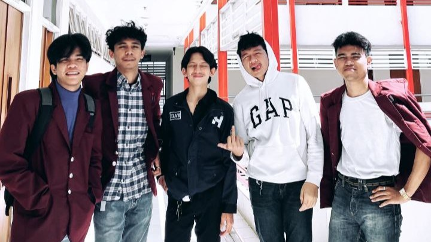

My Profile
Tentang Saya
Nama saya MUHAMMAD ILYAS FADILLAH biasa dipanggil ILYAS, Saya seorang mahasiswa dari TELKOM UNIVERSITY jurusan D3 Sistem Informasi Fakultas Ilmu Terapan dari kelas 47-04. Tujuan saya membuat website ini adalah untuk memenuhi tugas besar mata kuliah ARSIJARKOM, dan silakan simak materi dibawah ini.
Materi Bridge


Mengenal Bridge
Bridge connection merupakan perangkat yang dapat menghubungkan jaringan komputer LAN (Local Area Connection) dengan jaringan lokal yang lain. Bridge mempunyai kelebihan yaitu dapat mengbungkan tipe jaringan komputer yang berbeda seperti Ethernet dengan Fast Ethernet.
Bridge berjalan pada Data Link Layer pada network model OSI (Open System Interconnection). Oleh karena itu Bridge dapat menghubungkan jaringan komputer dengan metode transmisi atau medium access control yang berbeda. Selain itu Bridge juga dapat mempelajari alamat link yang ada pada setiap perangkat yang terhubung dengannya.
Fungsi Bridge
Bridge yang merupakan alat untuk menghubungkan dua buah jaringan komputer LAN yang saling terpisah. Melalui Bridge ini, tiap user di kedua jaringan komputer LAN tersebut bisa saling berkomunikasi dan bertukar data. Selain fungsi dasar tersebut, Bridge juga memiliki fungsi lainnya seperti
1. Memudahkan Mengelola Jaringan Sendiri
Jika setiap departemen di dalam sekolah memiliki kepentingan dan perangkat, server, atau workstation berbeda, maka akan lebih efisien jika memiliki jaringan LAN sendiri-sendiri. Kepentingan atau tujuan departemen yang berbeda akan lebih nyaman bekerja, jika memiliki jaringan komputer otonom sendiri. Jika ingin terhubung ke departemen lain, maka bisa dengan menggunakan bantuan dari Bridge ini.
2. Menghubungkan 2 Jaringan LAN yang Terpisah Jarak
Pada fungsi Bridge bagian ini dapat diartikan semisal, sekolah yang terdiri dari beberapa bangunan yang saling terpisah satu sama lain. Nah, jika setiap gedung memiliki jaringan LAN sendiri dan saling terhubung dengan Bridge, maka Bridge pastinya akan lebih ekonomis, daripada harus menyambungkan semua tempat dengan kabel.
3. Mengurangi Beban Jaringan
Fungsi Bridge dalam hal ini misalnya ada banyak user yang mengakses data berukuran besar dalam server dalam waktu bersamaan. Jika hanya mengandalkan satu LAN tunggal saja, maka akan menghambat performa jaringan dalam memenuhi permintaan setiap user. Oleh karena itu, alangkah lebih baik menggunakan banyak LAN namun saling terhubung ke server melalui Bridge.
Macam-macam Bridge
1. Bridge Lokal
Yang dimaksud dengan Bridge lokal adalah sebuah Bridge yang menghubungkan satu jaringan dengan jaringan yang lain yang lingkupnya masih lokal. Lokal dalam hal ini berarti masih dalam satu sistem jaringan. Bridge lokal lebih pendek dan sederhana
2. Bridge Remote
Bridge remote jangkauannya lebih luas ketimbang Bridge lokal. Bridge remote menghubungkan LAN satu dengan LAN yang lain. Dari hubungan ini terbentuklah sebuah sistem jaringan yang disebut dengan WAN atau Wide Area Network.
3. Bridge Nirkabel
Bridge nirkabel memiliki fungsi yang lebih rumit dan berat ketimbang dua jenis Bridge yang sebelumnya. Bridge nirkabel ini bertugas menghubungkan jaringan LAN kabel dengan LAN nirkabel atau beberapa media yang koneksinya menggunakan sistem wireless.
Lampiran
Tutorial website
Berikut adalah link melihat & mendownload dokumen tutorial pembuatan website.
Lihat & DownloadTutorial hosting
Berikut adalah link melihat & mendownload dokumen tutorial hosting dari website.
Lihat & Download